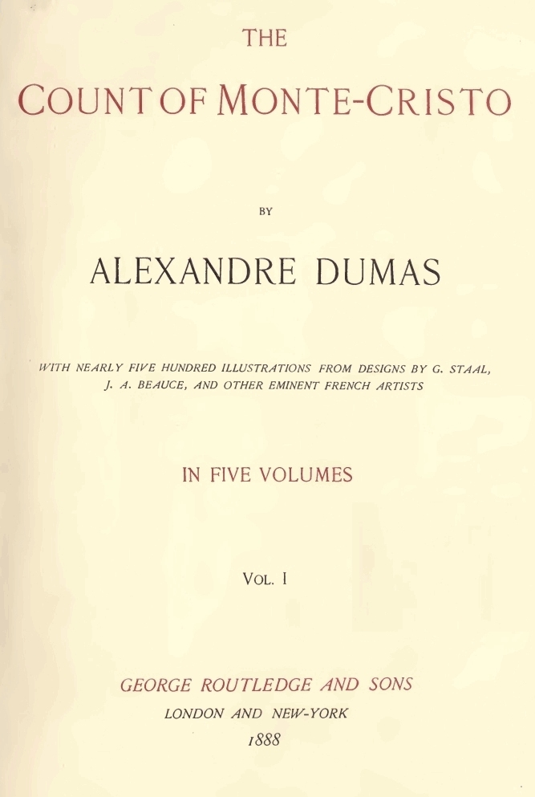

Edmond
LIVRO
Sua reinvenção inclui várias identidades; ao final, parte com Haydée.
versus
FILME 2024
O encerramento o mostra partindo sozinho, após escrever a Mercédès.
Referências: romance integral e fonte sobre a adaptação.
Arquivo 05 · Duas leituras
O Conde de Monte Cristo — Alexandre Dumas · Le Comte de Monte-Cristo — Filme de 2024
Aviso: esta página revela acontecimentos e desfechos da história.


O longa de Matthieu Delaporte e Alexandre de La Patellière reorganiza personagens e acontecimentos. Esta comparação se refere ao filme francês de 2024, não à série televisiva do mesmo ano.
14 comparações disponíveis
Sua reinvenção inclui várias identidades; ao final, parte com Haydée.
versus
O encerramento o mostra partindo sozinho, após escrever a Mercédès.
Referências: romance integral e fonte sobre a adaptação.
Deixa Fernand e volta a Marselha; não retoma a vida amorosa com Edmond.
versus
Pede a Edmond que poupe Albert e recebe sua carta de despedida.
Referências: romance integral e fonte sobre a adaptação.
A exposição de sua traição em Janina leva à desonra e ao suicídio.
versus
Enfrenta Edmond em duelo e é deixado vivo.
Referências: romance integral e fonte sobre a adaptação.
Começa como funcionário do Pharaon e torna-se banqueiro. Perde sua fortuna; Edmond o perdoa.
versus
Começa como capitão e torna-se um rico comerciante. Sua frota e seus bens são atingidos pelo plano.
Referências: romance integral e fonte sobre a adaptação.
Protege o pai bonapartista. A revelação sobre Benedetto e as mortes em sua casa o levam à loucura.
versus
O segredo político envolve sua irmã Angèle. André, seu filho, o mata.
Referências: romance integral e fonte sobre a adaptação.
Denuncia Fernand e termina ao lado de Edmond, por quem se apaixona.
versus
Apaixona-se por Albert e parte com ele.
Referências: romance integral e fonte sobre a adaptação.
Rompe com o legado do pai e ingressa no exército. Não forma um casal com Haydée.
versus
Sua relação com Haydée ocupa o centro do desfecho amoroso.
Referências: romance integral e fonte sobre a adaptação.
Benedetto assume uma falsa identidade aristocrática e revela ser filho de Villefort durante seu julgamento.
versus
André é um aliado do conde; mata o pai e morre na fuga.
Referências: romance integral e fonte sobre a adaptação.
Vizinho de Edmond, envolve-se em crimes e é morto por Benedetto.
versus
É marinheiro e ajuda na captura da frota de Danglars.
Referências: romance integral e fonte sobre a adaptação.
Monsieur Morrel é salvo da falência. Seu filho Maximilien ama Valentine.
versus
O armador perde seu negócio. Maximilien aparece como seu neto, sem o romance com Valentine.
Referências: romance integral e fonte sobre a adaptação.
Sobrevive ao envenenamento graças ao conde e se reúne com Maximilien.
versus
A trama de Valentine e dos envenenamentos não é incluída.
Referências: romance integral e fonte sobre a adaptação.
A esperança está ligada ao reencontro de Valentine e Maximilien e à partida de Edmond com Haydée.
versus
Haydée e Albert seguem juntos; Edmond deixa uma carta a Mercédès e parte.
Referências: romance integral e fonte sobre a adaptação.
Faria morre após uma crise de sua doença. Edmond foge ocupando seu lugar no saco funerário.
versus
Faria morre no desabamento do túnel. Edmond também escapa no saco funerário.
Referências: romance integral e sinopse do filme de 2024.
Benedetto revela sua filiação durante o próprio julgamento. Villefort termina em colapso psicológico.
versus
André revela sua origem no processo envolvendo Danglars e depois mata Villefort.
Referências: romance integral e sinopse do filme de 2024.